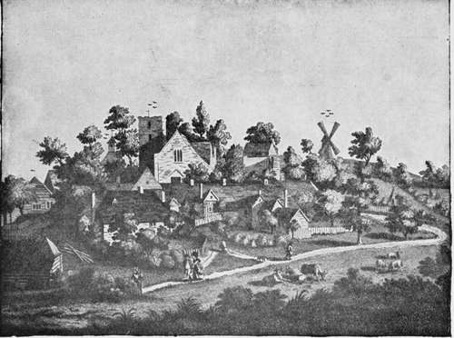

Medieval Hospitals. Part 3
Description
This section is from the book "Medieval Medicine", by James J. Walsh. Also available from Amazon: Medieval Medicine..
Medieval Hospitals. Part 3
The older portion of the Hospital of St. Jean at Bruges also gives an excellent idea of a later medieval hospital as it was constructed in a populous commercial town. Bruges, almost needless to say, was one of the most important cities of Europe in the fourteenth century. The Hospital of St. Jean, then, was built, like the cathedral and churches and the town hall, so as to be worthy of the city's prestige. The older part, which is now used for a storeroom, has the characteristics of the best medieval hospitals. The ward was one story in height, the windows were large, high in the walls, and the canals that flowed around the hospital made pleasant vistas for the patient, while the gardens attached were eminently suitable for convalescents. The phases of hospital building down the centuries can be studied at St. Jean, and, strange as it may seem, the oldest portion of the hospital, that of the medieval period, provided the most light and air for the patients and the best opportunity for thorough cleansing, as well as for occupation of the patients' minds with details of the construction that were visible from any part of the ward.
The hospitals of the Middle Ages are particularly interesting, because they represent a solution of the social problems other than merely the relief of pain and suffering, or the care of the needy who have none to care for them. They represent a ready, constantly near opportunity for the better-to-do classes to exercise charity toward those who needed it most. The hospitals were always in the busiest portions of the towns, and were often visited by the citizens, both men and women. Dr. John S. Billings, in his description of " The Johns Hopkins Hospital " (Baltimore, 1890), touched upon this spirit of the hospital movement of the Middle Ages in a very appropriate way when he said :
" When the medieval priest established in each great city of France a Hotel Dieu, a place for God's hospitality, it was in the interest of charity as he understood it, including both the helping of the sick poor, and the affording of those who were neither sick nor poor an opportunity and a stimulus to help their fellow-men; and doubtless the cause of humanity and religion was advanced more by the effect on the givers than on the receivers".
A rather significant historical detail with regard to medieval hospitals is the foundation of a special order to take care of the hospitals in which St. Anthony's Fire, or what we know as erysipelas, was treated. Apparently this indicated the recognition of the contagiousness of this disease by the medieval people. Pope Honorius III. approved the foundation of an order of nurses particularly devoted to the care of patients suffering from this affection. Other religious congregations for the same works seem to have been established. We did not recognize the contagiousness of the disease until the last generation. Undoubtedly these special foundations made it possible to control many of the epidemics of erysipelas that used to make surgical care in our hospitals in the modern time such a difficult matter. Even as late as our Civil War here in America, erysipelas was the special dread of the hospital surgeon. Oliver Wendell Holmes pointed out that erysipelas might readily be carried to the parturient woman with the production of child-bed fever. It is interesting to realize, then, the attempt of the medieval period to segregate the disease.
The Harbiyedown Hospital, Near Canterbury.
From " Medieval Hospitals " by Miss R. M. Clay.
" On the outskirts of a tow n, seven hundred years ago, the eye of the traveller would have been caught by a well-known landmark—a group of cottages, with an adjoining chapel, clustering round a green enclosure. At a glance he would recognize it as the lazar-house, and would prepare to throw an alms to the crippled and disfigured representative of the community".
Besides hospitals, a series of lazarettos—that is, of buildings for the segregation of lepers—were erected in the various countries of Europe during the medieval period. Just about the end of the Crusades it was discovered that leprosy had become very common throughout Europe. It is often said that leprosy was introduced at this time, but it had evidently been in the West for many centuries before. Gregory of Tours mentions leper hospitals as early as 560, and the disease evidently continued to progress, in spite of these special hospitals, until in the thirteenth century it became clear that strenuous efforts would have to be made to wipe out the disease. Accordingly, léproseries were erected in connection with practically every town in Europe at this time. Baas estimates that there were some 19,000 of them in Europe altogether. Virchow has listed a large number of the leper hospitals of the German cities, quite enough to show that probably no organized community was without one.
As a consequence of this widespread movement of enforced segregation, leprosy gradually died out in Europe, remaining only here and there in backward localities. The disease was probably as common during the later Middle Ages as tuberculosis is among us at the present time. The recently discovered relations between the bacterial cause of the two diseases may give rise to the question as to whether we shall succeed as well with the great social and hygienic problem that confronts our generation, of lowering the death-rate from " the great white plague," as the medieval generations did with their chronic folk-disease, leprosy. It would be " a consummation devoutly to be wished." We are now beginning to have as many sanatoria for tuberculosis in proportion to the population as they had of léproseries. These léproseries, or lazarettos, as they were called, were not at all the dreadful places that the imagination has been wont to picture them in recent years ; on the contrary they were, as a rule, beautifully situated on a side-hill to favour drainage, consisted of a series of dwellings with a chapel in their midst surrounded by trees, and encompassed by what was altogether a park effect. Miss Clay, in " Medieval Hospitals," has given a picture of one of them, which we reproduce, because it serves to contradict the popular false notion with regard to the bare and ugly and more or less jail-like character of these institutions.
Continue to: